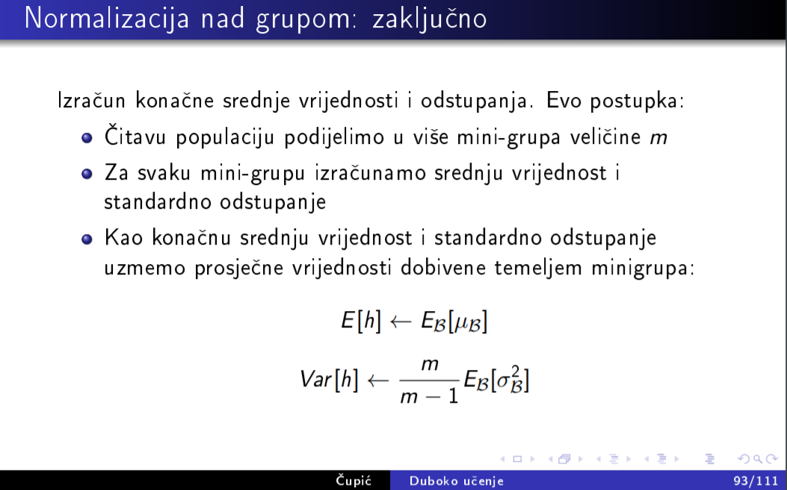

je li netko zna zasto pycharm ne moze naci im2col_cython?
neZnamNista Kako si ga instalirao?
zabaravio sam pokrenuti naredbu python3 setup_cython.py build_ext –inplace koja rjesava taj problem, piše u dokumentaciji samo što nisam provjerio
jel se cython za python3 treba instalirat na neki drugi način umjesto pip install Cython? jer mi naredba “python3 setup_cython.py build_ext –inplace” ne radi za python3, a kad stavim python onda ne može pronaći setup_cython.py
MJ3 ako koristiš python3, onda vjv i trebaš pip3. Ubuduće najbolje koristiti conda env gdje su python i pip aliasi za python3 i pip3. Isto tako ovo da ne može naći setup je sumnjivo, pripazi da si pozicioniran u pravi folder
MJ3 Probaj python3 -m pip install Cython
python3 -m pip install Cython
Instalirao sam Cython, ali javlja mi se greška kad pokrenem python setup_cython.py build_ext –inplace. Kaže mi error: Unable to find vcvarsall.bat Jel zna možda neko kako to sredit?
Bono Jel sigurno instaliras sa pythonom v3 a ne v2?
I provjeri si imas li msv build tools
Jel zna netko objasnit kako izračunati receptivno polje?
[obrisani korisnik] InCogNiTo124
Zadatak 5.a) MI 2019, profesor kaže da je br. parametara modela 4 za prvi sloj i 4 za treći. Nije mi jasno kako je došao do toga. (u 1.a) zadatku mi je jasno kako se dođe do br. parametara)
member Mislim parametri su ti doslovno napisani, samo ih pobrojiš na papiru 😅
Jel moze neko objasniti kako bi isao backprop kod konvolucijskih mreža ako za sloj provodimo konvoluciju a da je stride > 1. U prezentaciji ima nekakva formula al nije mi bas najjasnija
 jel bi se u b) zadatku srednja vrijednost i standardna devijacija trebale računat posebno za dvije mini-grupe pa onda njihov prosjek kao što je navedeno u slajdu? na predavanju je profesor riješio kao da je sve jedna grupa
MJ3 Kod učenja se koriste pojedini batchevi za izračun srednje vrijednosti i std. devijacije, a kod eksploatacije cijela populacija. Ova notacija iz slajda znači da se prođe kroz sve batcheve i onda izračuna očekivanje srednje vrijednosti i std. devijacije na temelju pojedinih batcheva. Poledaj u https://arxiv.org/abs/1502.03167.